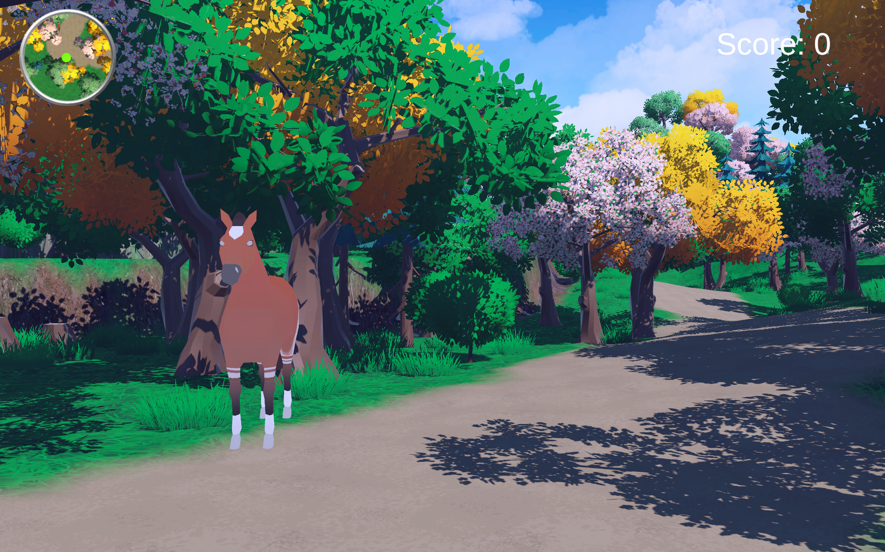
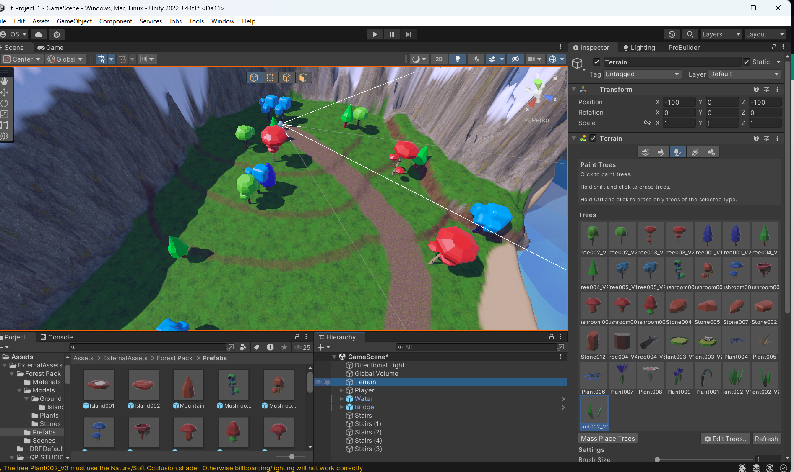
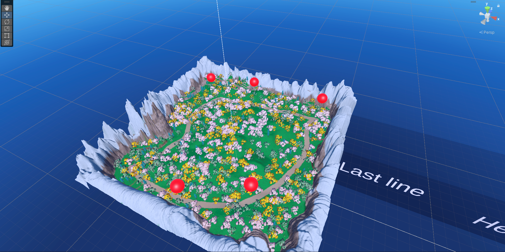
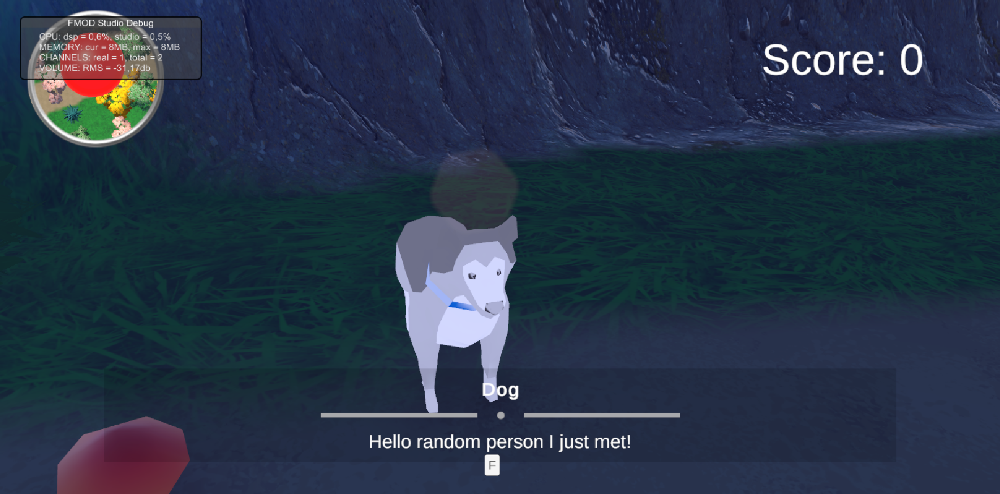

Video Game
A Walk Through the Woods
A game about helping a horse find his lost friends for his party. Will you help him or quell your hunger instead?

About the Project
A walk through the woods was my Unity ` fundamentals course of my studies during my first year,
The idea of the project was to create a "walking simulator" where the player moves around the level and has some simple
interactable moments with the characters.
I wanted to make a game with a lively atmosphere and a really "happy go lucky vibe" where the actual story stands in contrast with its surroundings.
All while still being narratively sound. Therefore a lot of bright colors and bright lights were used to create a carefree and happy look to the game.
My Contribution
Terrain and level design
Story and narrative
minimap / UI
models and assets were found externally.
Project Details
Role
Game Designer
Engine
Unity
Team Size
1 person (me)
School project
this was my introductory Unity course.
Development Process
Below are some screenshots of the project in the editor with explanations.
The level of this game was fairy easy to do. I got to work on some natural environment and a lot of uneven ground. I had to make a natural path the player can follow where they meet the animals and also interact with them.
Below are some screenshots of the level within the editor and its iterations over the development process.



Since you could interact with the characters meant that I also had to make them distinguishable, therefore we gave them some different dialogue. This was done depending on the animals stereo type, so the dog for example would be more happy to see the human player then the cat.

I wanted to try a game where the player can make choices that will impact the ending of a game. Therefore this game has 2 different choices that depending on the total outcome will result in a different ending. I like how this came out since even if the story is simple it adds a layer of complexity and interactivity to the game.
Loading dialogue script...Final Result
In the end this project really helped me understand the basics of Unity which I still profit off up to this day. while simple I believe this project was a great way for me to learn and test systems like yarnspinner, the unity terrain tool and the basics of scripting.